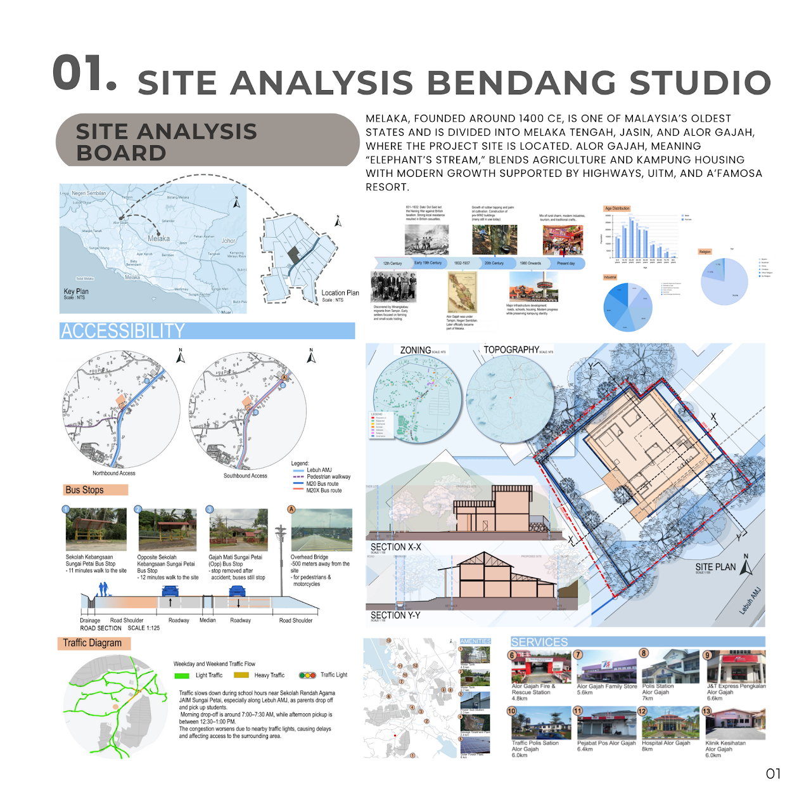
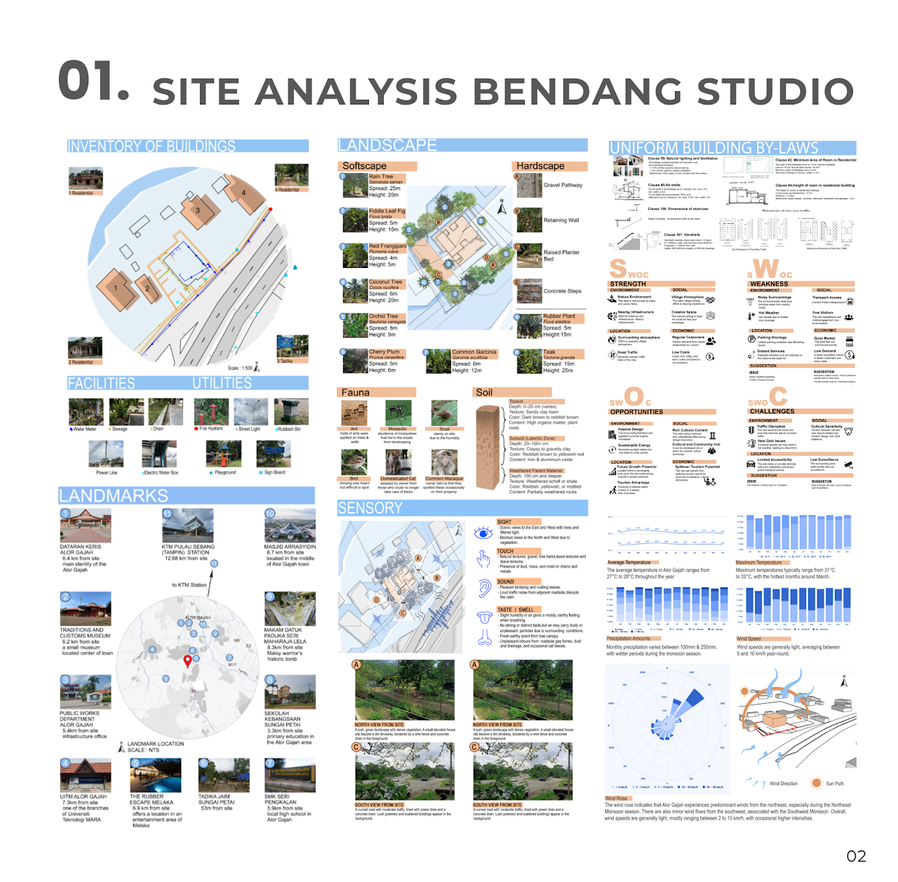
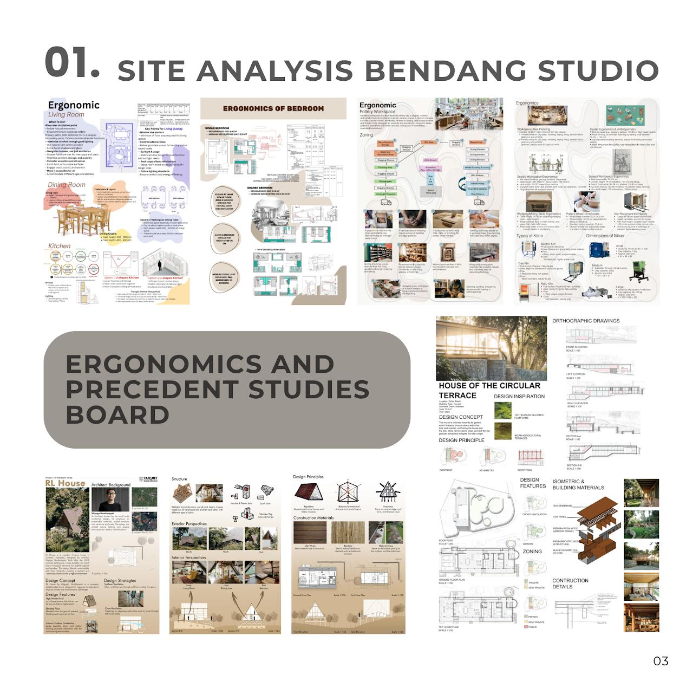

Site Analysis — Bendang Studio & Touchstone
For the first task which is Project 1A, we were brought to a site — Bendang Studio, Kampung Sungai Petai, Alor Gajah, Melaka, accessible via Lebuh AMJ. It currently houses BendangStudio's ceramics workshop with retail and a cafe. A site analysis was conducted as a class group project to analyse the site for further understanding before proceeding to the next project.


Bendang Studio, a ceramic workshop in Alor Gajah, Melaka, celebrates simplicity and traditional craftsmanship through handcrafted pottery. Surrounded by lush greenery, it serves as both a creative workspace and production hub, hosting occasional workshops and collaborations. Its rural charm and artisanal spirit make it an ideal site for design exploration.
Touchstone — Weight of HarmonyThis touchstone model reflects the balance and protection between modern architecture and nature. The metal wire symbolizes architectural structures intertwined with leaf vein patterns mimicked by brown ropes — echoing nature's quiet strength. A stone placed in the centre represents living beings and balances the overall model. A curved enclosure formed with transparent strips reflects the shared protection both nature and modern architecture offer to one another.